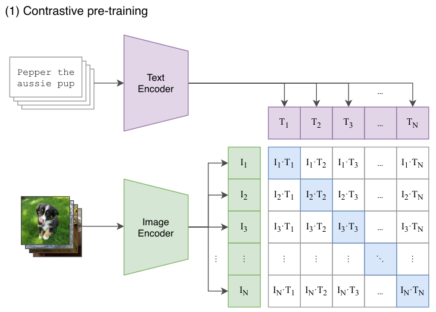

图像与文本如何配对？
给定一批 N 个图文对，CLIP 分别对图像和文本编码。每张图像都要与每段文本比较，由此得到图 1 中的 N × N 相似度矩阵。
How are images paired with text?
CLIP encodes a batch of N images and their captions separately. Comparing each image with every caption gives the N × N similarity matrix in Figure 1.

矩阵的对角线上有 N 个正确配对，其余 N2 − N 个组合都是负例。训练时，模型提高正确配对的相似度，同时降低负例的相似度。
The diagonal contains the N matching pairs. The other N2 − N combinations are negatives. Training raises the similarity of the matched pairs and lowers it for the negatives.